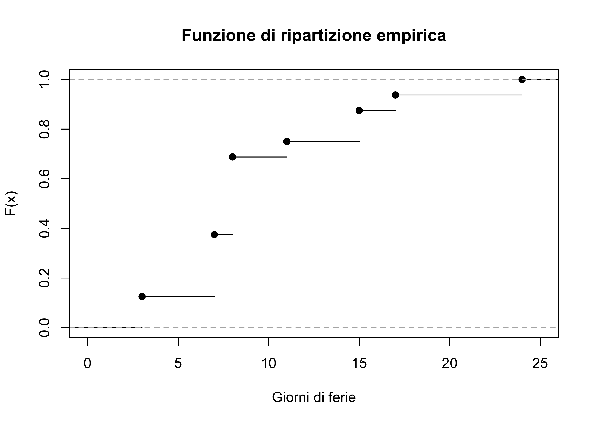
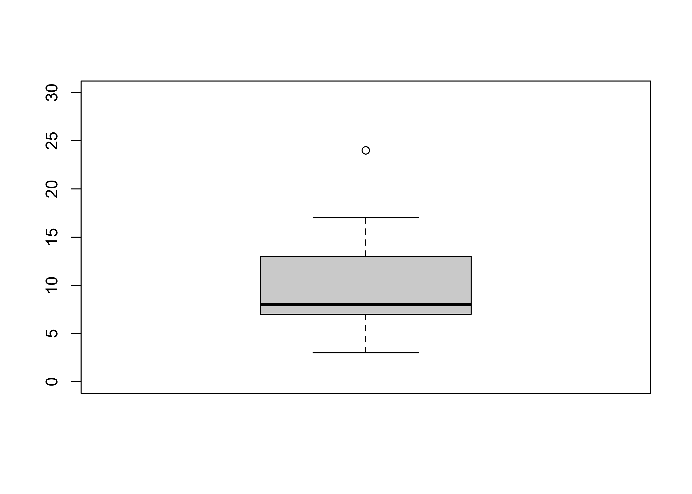
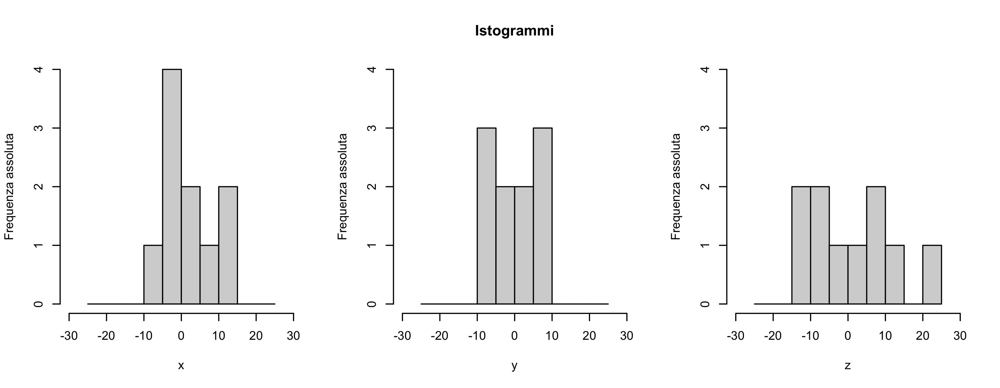

Statistica I
Esercizi 3: variabilità, istogrammi, boxplot, simmetria, curtosi
Homepage
Soluzione di alcuni esercizi
Le seguenti soluzioni sono state gentilmente fornite dal tutor di Statistica I dell’A.A. 2021/2022, Alex Alborghetti, che ringrazio. Le soluzioni sono state quindi riviste dal docente, che si assume le responsabilità di eventuali sviste ed errori.
Esercizio A
Viene riportata la tabella con le frequenze relative cumulate:
| Modalità | Freq. assoluta cumulata | Freq. relativa cumulata |
|---|---|---|
| 3 | 2 | 0.125 |
| 7 | 6 | 0.375 |
| 8 | 11 | 0.688 |
| 11 | 12 | 0.750 |
| 15 | 14 | 0.875 |
| 17 | 15 | 0.938 |
| 24 | 16 | 1 |
Dalla tabella precedente, si ottiene \text{Me} = 8, \mathcal{Q}_{0.25} = 7 e \mathcal{Q}_{0.75} = 11, che sono i più piccoli valori che, rispettivamente, lasciano alla propria sinistra almeno il 50\%, 25\% e il 75\% dei dati.
Costruiamo il boxplot. Abbiamo già i quartili, dobbiamo trovare i “baffi”. Il baffo inferiore è definito come:
\max\{\min(x), \mathcal{Q}_{0.25}- 1.5 (\mathcal{Q}_{0.75} - \mathcal{Q}_{0.25})\} = \max\{3, 1\} = 3, quello superiore è definito come:
\min\{\max(x), \mathcal{Q}_{0.75} + 1.5 (\mathcal{Q}_{0.75} - \mathcal{Q}_{0.25})\} = \min\{24, 17\} = 17 Tutti i punti al di fuori dell’intervallo [3, 17], dunque, sono considerati anomali. Nel nostro caso, solamente il valore x_{(16)} = 24 è anomalo.

La media aritmetica vale:
\bar{x} = \frac{2 \times 3 + 4 \times 7 + \dots}{16} = 9.75.
Il campo di variazione è lo scarto tra il valore massimo e il valore minimo, in questo caso 24-3 = 21. La differenza interquartile vale \mathcal{Q}_{0.75} - \mathcal{Q}_{0.25} = 4.
Lo scarto quadratico medio è per definizione pari a \sigma = \sqrt{\sigma^2}. Possiamo riscrivere il termine \sigma^2 come:
\begin{split} \sigma^2 =& \frac{1}{n} \sum_{i=1}^n(x_i-\bar{x})^2 = \frac{1}{n} \sum_{i=1}^n (x_i^2 - 2x_i\bar{x} + \bar{x}^2)\\ &=\frac{1}{n} \sum_{i=1}^nx_i^2 -\frac{2}{n} \bar{x}\sum_{i=1}^n x_i + \bar{x}^2 \\ & =\frac{1}{n} \sum_{i=1}^nx_i^2 - \bar{x}^2 \\ &=\frac{2\cdot3^2+4\cdot7^2+\dots}{16} - 9.75^2 = 28.0625. \end{split}
Allora \sigma = \sqrt{28.0625} = 5.297.
Esercizio C
Sapendo che \bar{x} = 1/n\sum_{i=1}^nx_i = 76, allora \bar{x}' = (76 \cdot n + 90)/ (n+1) = 76.25 è il nuovo voto medio.
Sapendo che \sigma^2 = 1/n \sum_{i=1}^nx_i^2 - \bar{x}^2 = 25, ricaviamo \sum_{i=1}^nx_i^2 = 56\cdot(25+76^2) = 324856.
Allora \sum_{i=1}^{n+1}x_i^2 = 324856+90^2 = 332956. Quindi
\sigma^{2'} = 332956/57-76.25^2 = 27.271.
Se il nuovo dato valesse x_{57} = 76, allora ci aspettiamo che la media rimanga invariata (per un motivo analogo alla proprietà di associatività) e la varianza diminuisca, dato che i dati si concentrano maggiormente attorno alla media, divenendo più precisamente pari a \sigma^{2'} = 25\cdot 56 / 57 = 24.561.
Esercizio D

L’indice di asimmetria di Pearson è:
\gamma_x = \frac{1}{n_x} \sum_{i=1}^{n_x} \left(\frac{x_i - \bar{x}}{\sigma_x}\right)^3, mentre l’indice di curtosi di Person è:
\kappa_x = \frac{1}{n_x} \sum_{i=1}^{n_x} \left(\frac{x_i - \bar{x}}{\sigma_x}\right)^4.
Sono riportati di seguito i risultati calcolati sui dati a disposizione:
| Dati | Media | Varianza | Asimmetria | Curtosi | Descrizione |
|---|---|---|---|---|---|
| x | 1.929 | 40.543 | 0.444 | 1.771 | Asimm. positiva, bassa curtosi. |
| y | 0.322 | 28.772 | -0.022 | 1.501 | Asimm. negativa, bassa curtosi. |
| z | 1.373 | 105.237 | 2.251 | 2.251 | Asimm. positiva, bassa curtosi. |